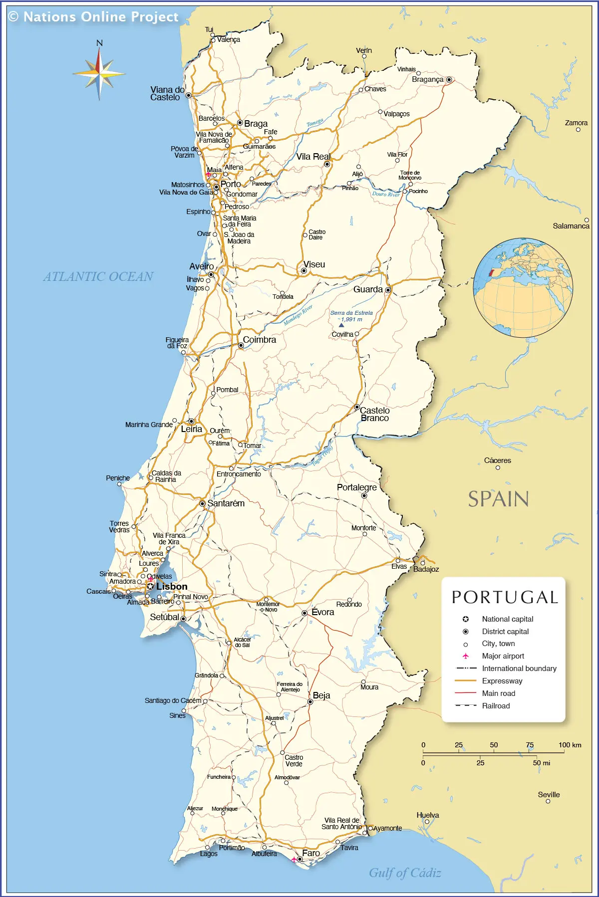

Summary
Portugal is a warm, welcoming country on Europe's Atlantic coast, known for its golden beaches, historic cities, charming villages, and rich maritime heritage. With vibrant culture, distinctive cuisine, and stunning landscapes from the Algarve to the Douro Valley, it offers something for every type of traveler.
Getting around
Transport
Portugal's transportation system is easy to navigate, with trains connecting major cities like Lisbon, Porto, and Coimbra, and regional lines reaching many smaller towns. In cities, trams, metros, and buses are efficient, while renting a car is ideal for exploring coastal areas and rural regions at your own pace.
Safety
Portugal is considered one of the safest countries in Europe, with low violent crime and friendly, helpful locals. Petty theft can occur in busy tourist zones, so keeping an eye on personal belongings is sensible. Overall, travelers can feel comfortable walking around cities and coastal towns day or night.